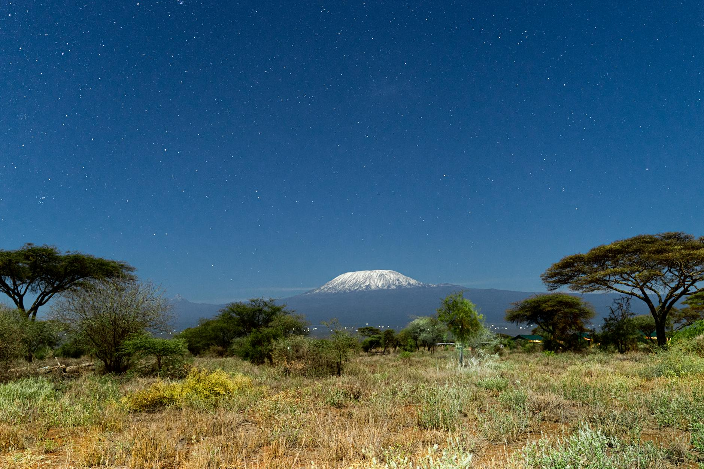
Thursday: Fly SAN → Kilimanjaro (~22h)
- Drive to LAX (~2h)
- Qatar Airways LAX → JRO, overnight
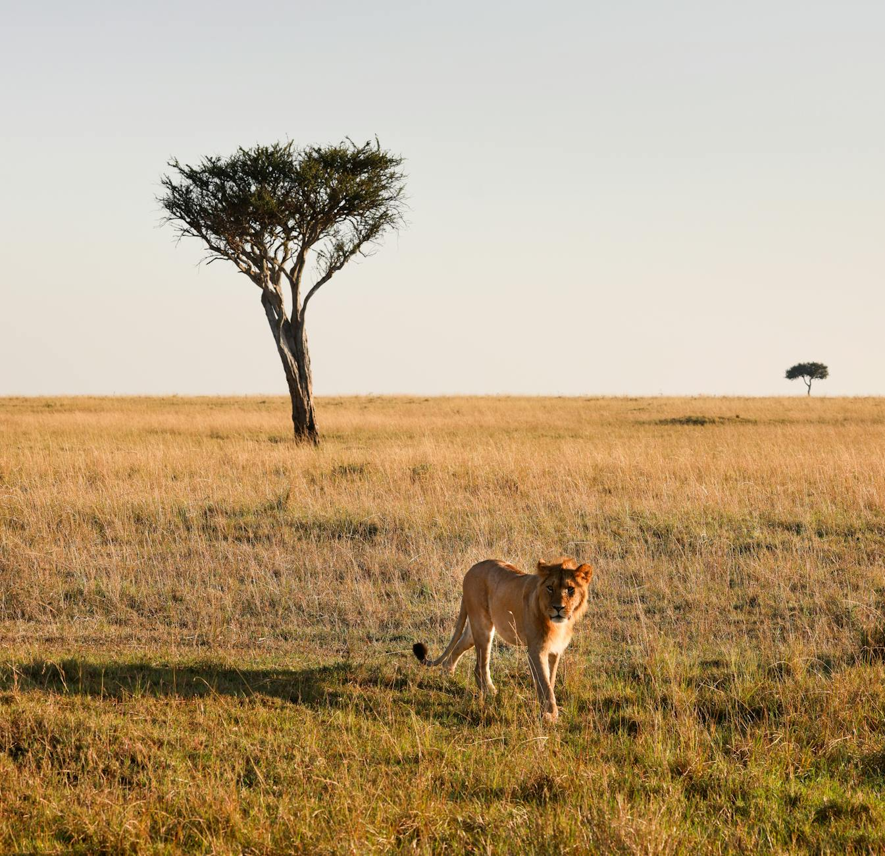
Big-5 game drives in the northern Serengeti, then an Indian Ocean recovery on Zanzibar.
Stops: Arusha · Serengeti · Ngorongoro Crater · Stone Town · Kendwa Temp: 55–75°F, peak dry season
Big-5 game drives in the northern Serengeti, Ngorongoro Crater, beach finish on Zanzibar. ~75°F days, ~55°F nights — peak dry season.
Heads up: Mara River crossings typically peak late July through early September. In mid-July (this trip's window) the herds are usually still moving north and crossings are unreliable. You'll see massive herds in the northern Serengeti either way; witnessing an actual crossing is luck of the draw.

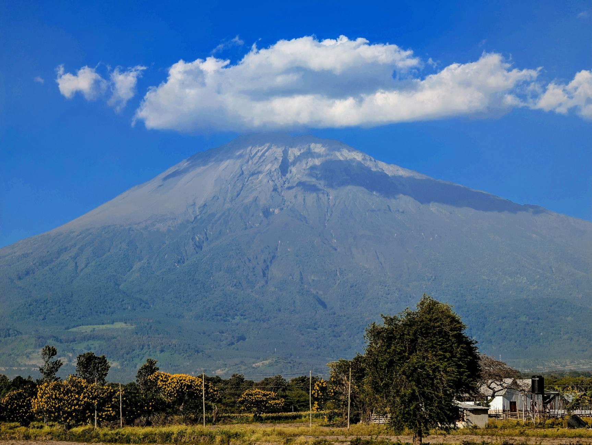
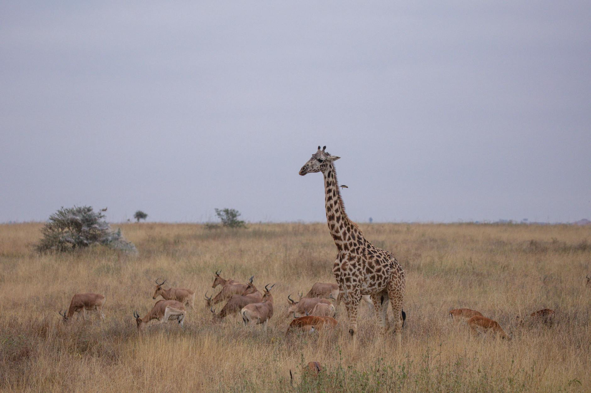
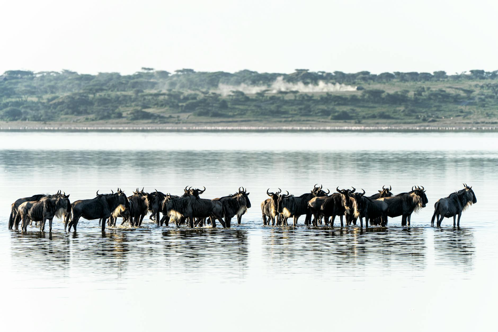
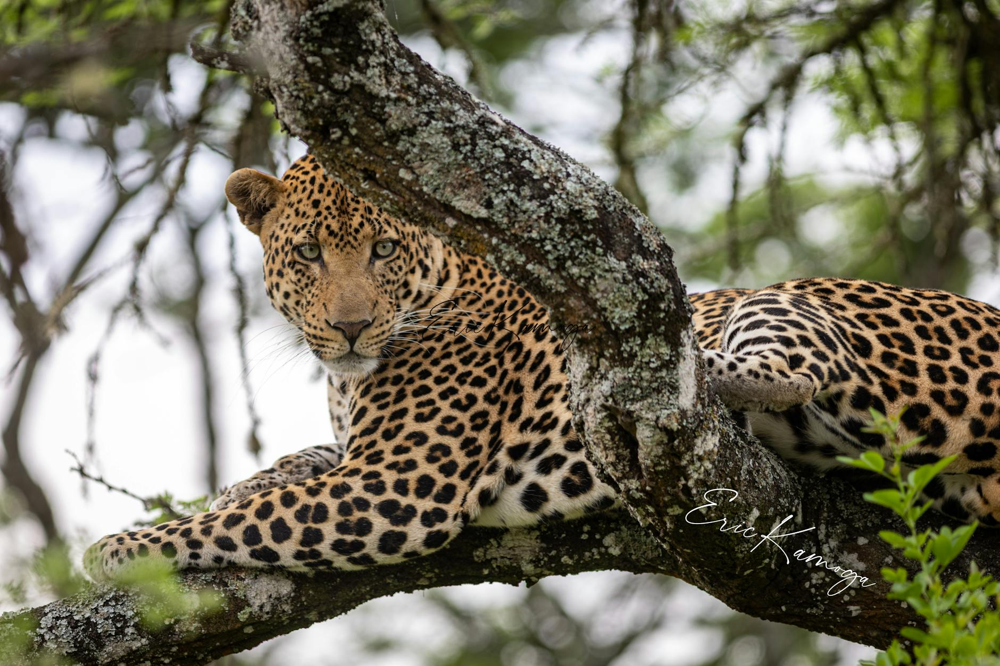
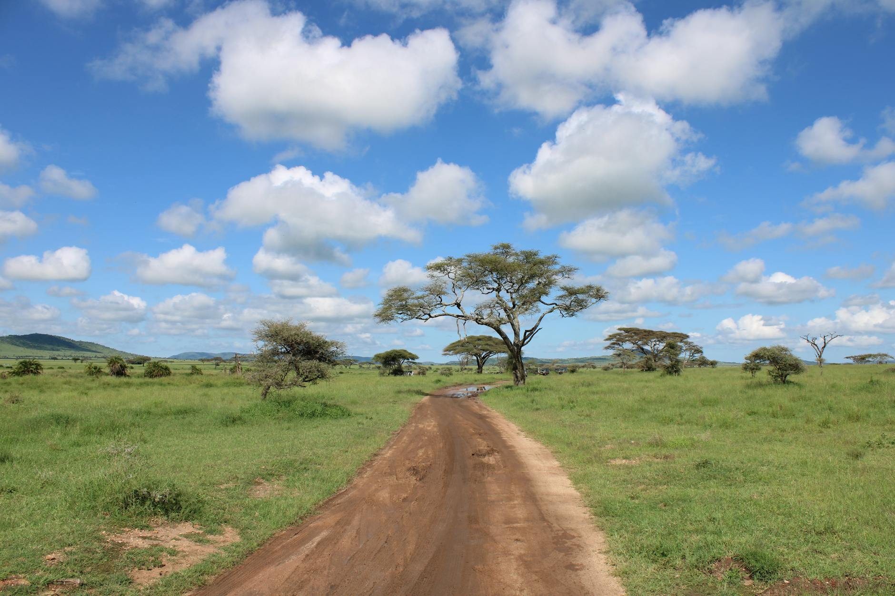
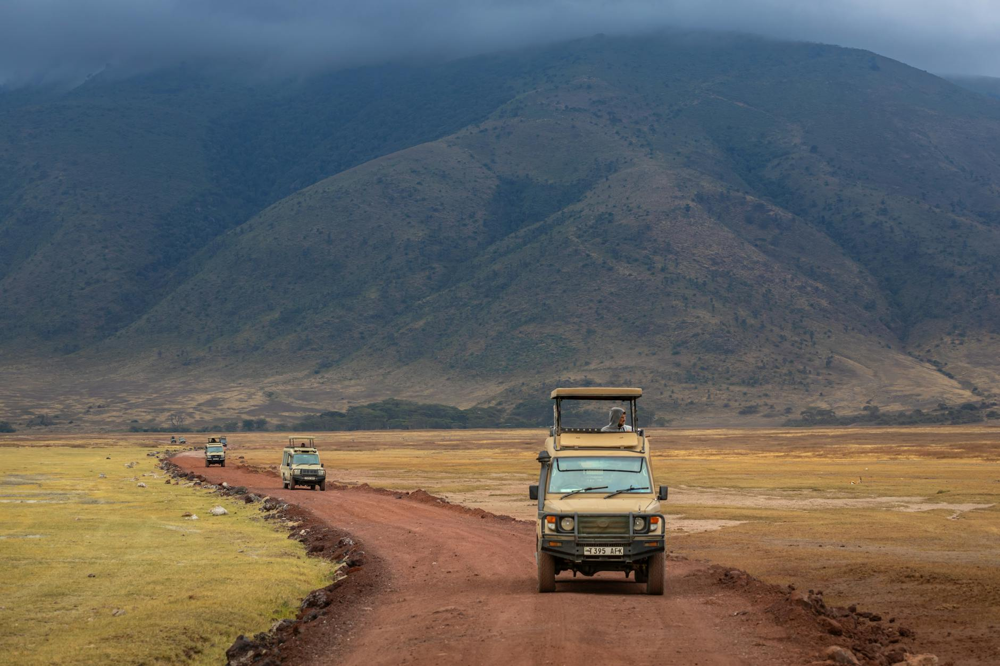
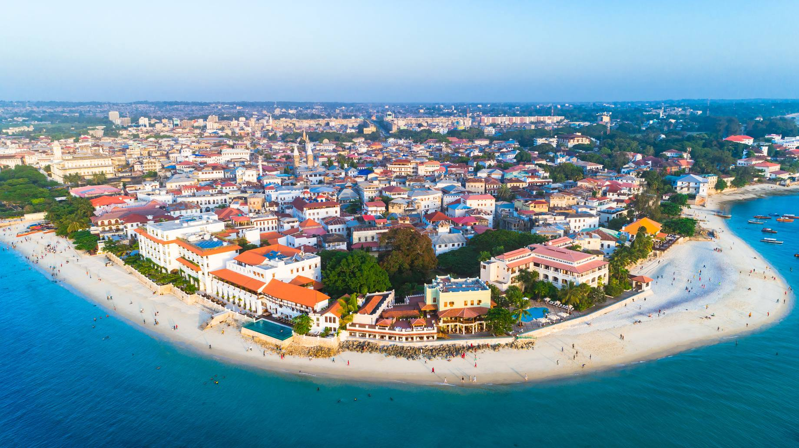
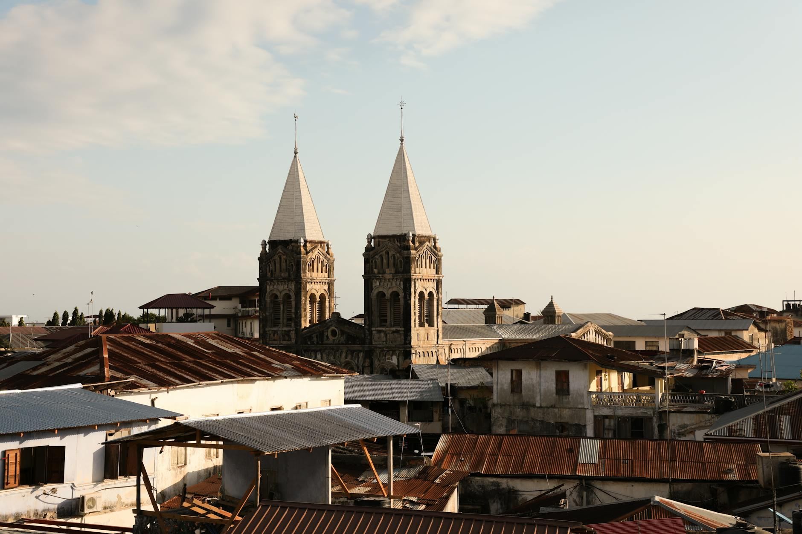
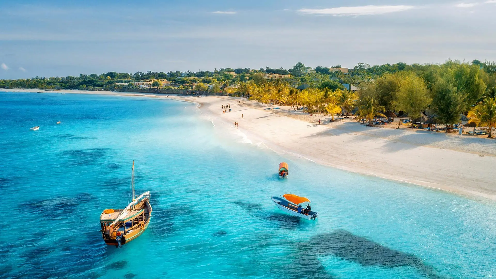
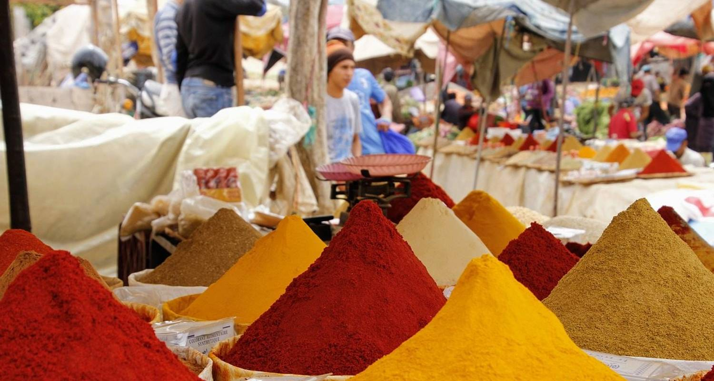
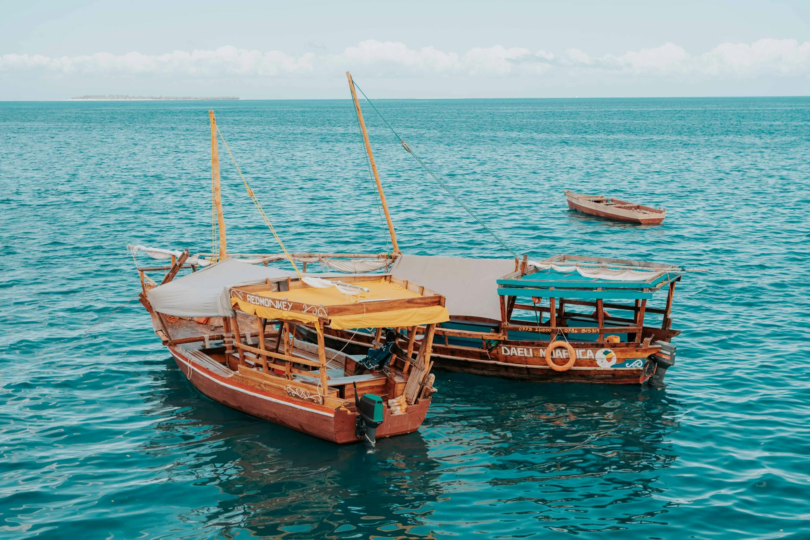
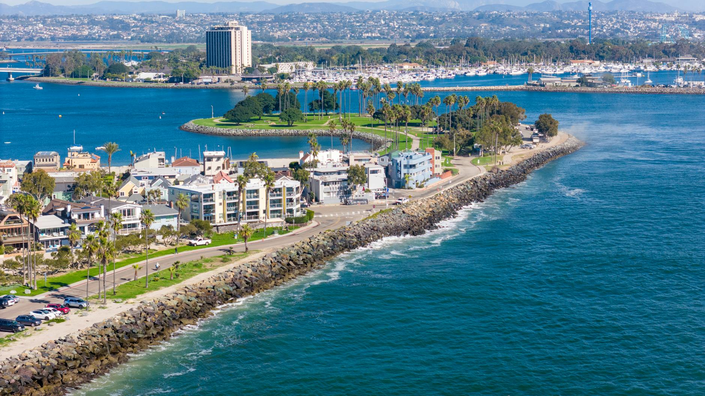